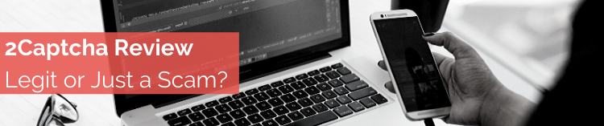

Nowadays, almost anyone can make money online.Is 2Captcha one of those ways?
2Captcha.com’s website was registered in 2014, so it’s been around for several years now. When you visit their website, you’ll see that they’re a program that pays you for solving/answering captchas. You’re probably already familiar with captchas. It’s those blurry texts or image puzzles that you need to solve before being granted access to something (like a website’s content). The work at 2Captcha will require you to solve/answer captchas. You will then be paid for your work.Note that pay payments are made in cash and the minimum withdrawal amount is only 50 cent s to 1 dollar. Also, there are no payment fees for cashing out. Interested yet? Well, it’s free to join, so that makes it more exciting.
Press on this link
To better understand how 2Captcha works, we will look at their program from two points of view – 2Captcha's customers/clients' point of view and yours (the worker).
For 2Captcha's customers, they need quick and simple captchas for users of their website to answer. This is important because time and/or errors while solving these puzzles cause delays in their business. Time is money, so aside from annoying for people and stopping them in their tracks… captchas can lead to company losses. When customers register to 2Captcha’s services, they’ll be charged certain fees. They can then upload the captchas they encounter into the system and the company will provide them with quick answers/solutions.
Now, for you (if you decide to become a 2Captcha worker), your job is to answer/solve captchas as they come into the system. You’ll be paid a small amount of money for each task, and you can work whenever you want and wherever you can (using your computer or smartphone). Just hit the Start button when you want to start working and the Stop button when you want to stop. Your account will also go into sleep mode when the system senses inactivity from your end. Don’t worry, you can easily get back to working from sleep mode by clicking the Start button again.
2Captcha makes money by acting as the middleman and program creator. They’ll pocket the difference from the amount paid by the companies and their payouts to their workers. Remember, this is a business, and they make money from their program that helps people (their customers) simplify their tasks of dealing with captchas. In the same way, the company also provides work to people who are willing to do the task for a small fee. Having a 24/7 platform is also beneficial to everyone. People can use their service at any time and workers can work at any time of the day as well.
Customers will pay around $.50 to $3 per 1,000 captchas. Note that normal (regular) captchas cost less than ReCaptchas (those that involve images and puzzles with conditions). The average solving speed for captchas (from the customers’ end) can be anywhere from 12 to 30 seconds. Remember, every second counts from a business’ point of view. These are the rates customers pay (not the rates 2Captcha pays you).For workers (you), it's free to join 2Captcha.com. You’ll be paid around $.20 to $1 per 1,000 captchas. Again, more difficult captchas (ReCaptchas) get higher pay than normal (regular) captchas. Note that rates are shown on the screen for available captchas, so you’ll know how much you’ll be paid for the tasks. As for the solving time/speed, this will depend on you. If you’re fast (really fast), you’ll be able to handle 1,000 captchas in less than 3 hours. However, the loading time per captcha is not guaranteed. So, if there are no available captchas (or a lot of workers at a given time), you can experience some idle time while performing captcha tasks.